사용자 레퍼런스 v3 기준. 몸통·허벅지만 바뀌었고 얼굴·헤어·손·발·본은 그대로입니다. 1차 v3a: 부분 충족(허리·아랫배 전이 개선). 2차 v3b: 부분 개선(골반 위쪽 폭·둔부 연결 보완, 후면 대각선 접힘·옆면 아래 굴곡은 아직 남음). 둔부 갈라짐 깊이(z88 단면): v2d 3.1 → v3a 5.2 → v3b 5.3cm로, 사용자가 정한 3.2cm 유지 조건을 아직 충족하지 못했습니다(다음 판에서 보호 조건으로 고정). 회색 점검 재질, 같은 카메라·조명. 3차 v3c: 깊이 조건 3.20cm 충족, 둔부 아래 대각선 접힘은 남음 → 사용자 외형 확인 전. 4차 v3d: 수치는 통과했지만 후면에 새 수평 띠·융기가 생겨 v3c보다 부자연스러워 비채택(기록용으로만 둠). 5차 후보 v3e: z87.5에서 끊던 국소 채움 대신 z72~104 넓은 구간을 1.5cm 간격으로 연속 보정한 판(최대 이동 1.3cm, 폭·높이 좌표 불변). v3d의 강한 수평 융기는 피했지만 둔부 아래 대각선 주름 개선은 제한적이라 담당도 완성으로 보지 않습니다. 6차 후보 v3f: 보정량을 더하는 대신 표면 자체의 작은 굴곡을 2cm 규모로 평균화하고 넓은 보정으로 둔부 볼륨을 복원한 판. 담당 육안으로는 v3c·v3e에 남던 후면 하부 대각선 접힘이 뚜렷이 완화됐고, 작은 잔주름과 체형 선호는 사용자 확인으로 남깁니다. v3c·v3e·v3f 중 무엇을 기준으로 할지는 사용자 확인 사항이며, 담당은 확인 전까지 새 판을 만들지 않습니다. 참고로 v3c 이후 판은 허리·골반·둔부 연결만 다룬 후보이며, 목표 메모에 있던 긴 하체 인상(가랑이 전이 1~1.5cm 상승 검토)은 v3c에서 깊이를 복원하며 되돌려 v3f의 높이 좌표는 v2d와 완전히 같습니다. 실측은 어깨 36.2, 허리 19.8, 골반 37.8, 골반 아래 36.4cm, 허리/골반 너비비 0.52입니다. 다리 길이 조정을 원하시면 별도 판으로 진행합니다.
둔부 갈라짐 깊이 3.20cm 유지, 폭·높이 좌표 불변, 삼각형·이음 불변. 표면의 작은 굴곡을 2cm 규모로 평균화하고 넓은 보정으로 둔부 볼륨을 복원(최대 이동 2.2cm). 후면 하부 대각선 접힘이 v3c·v3e보다 뚜렷이 완화됐고, 작은 잔주름은 남아 있습니다. 얼굴 확대 최대 픽셀 차 1/255로 불변.
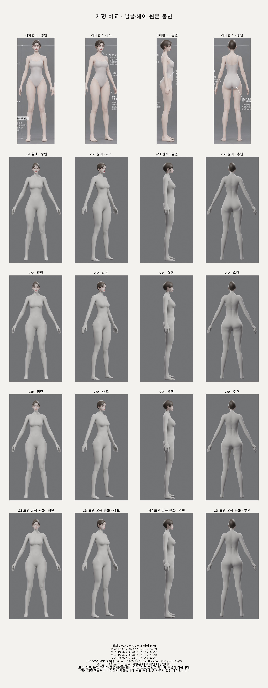
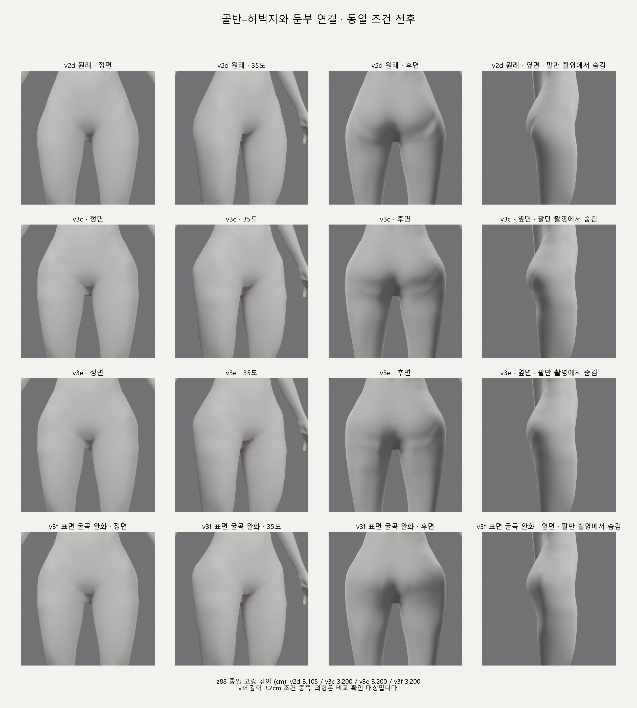
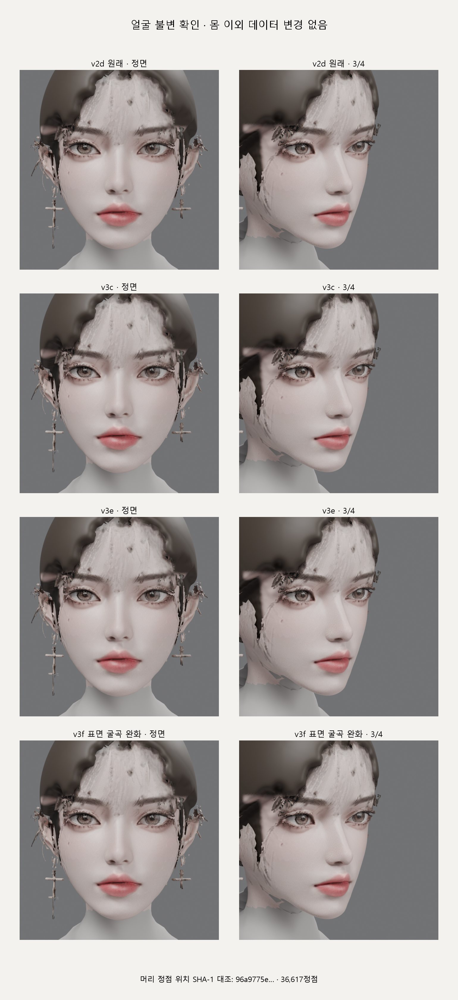
둔부 갈라짐 깊이 3.20cm 유지, 폭·높이 좌표 불변, z72~104 구간 연속 곡면 보정(최대 1.3cm). 수치 조건 통과. 외형은 v3d의 수평 융기를 피했으나 둔부 아래 대각선 주름은 제한적으로만 개선됐습니다. 얼굴 픽셀 불변 확인.
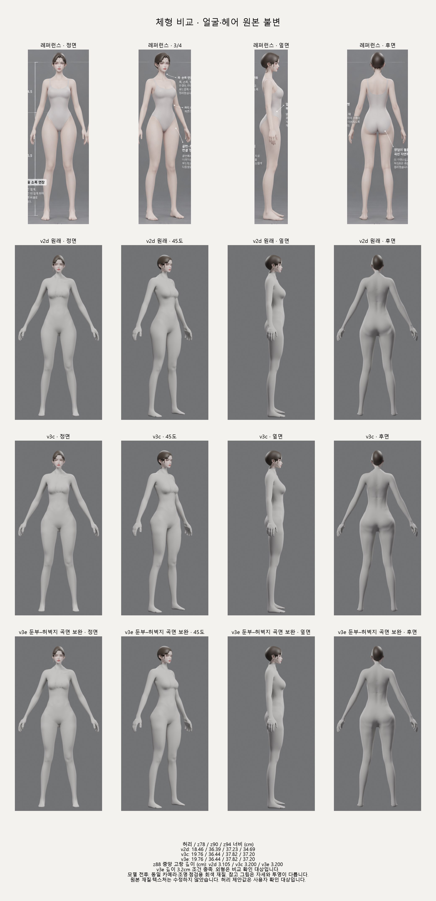
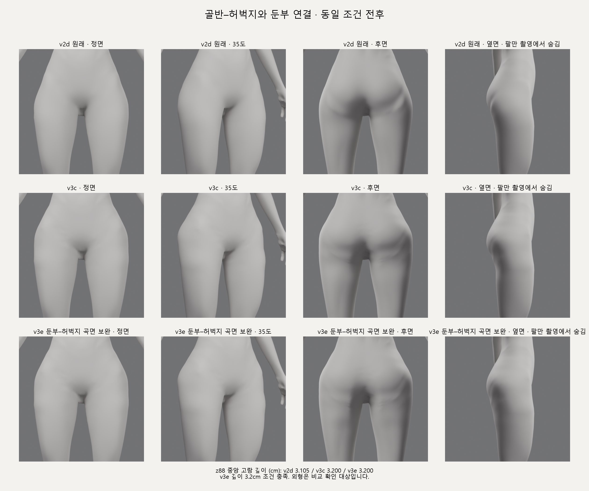
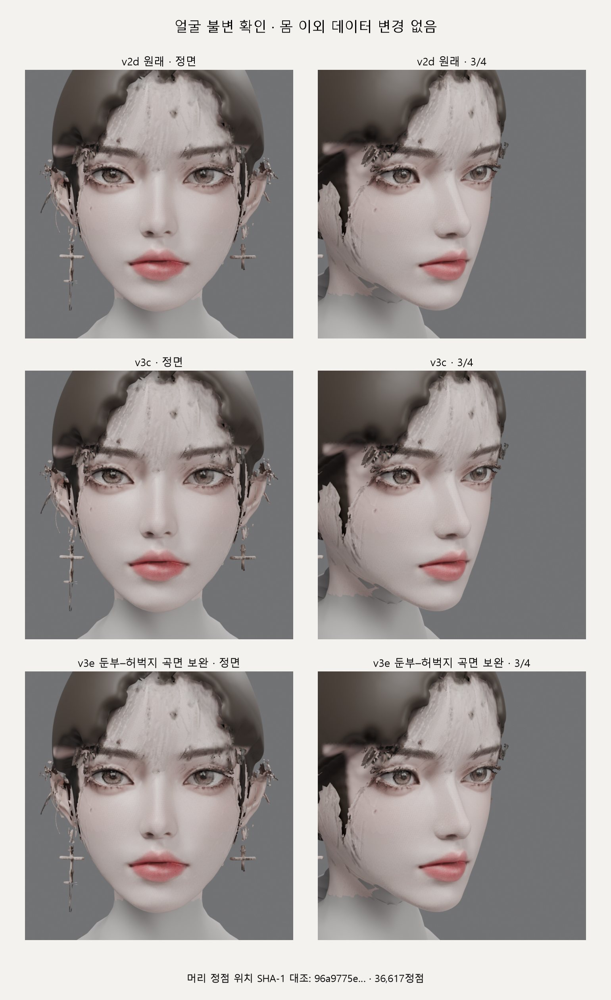
둔부 갈라짐 깊이 3.20cm와 폭·높이 좌표는 그대로 두고 z87.5 아래 후면만 국소 채움(최대 1.1cm)한 판입니다. 수치 조건은 통과했지만 후면에 새 수평 띠와 융기가 생겨 v3c보다 부자연스러워 채택하지 않았습니다. 얼굴 렌더 차이는 최대 1/255로 불변입니다.
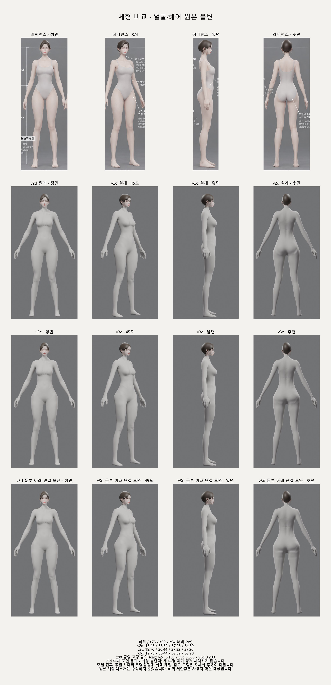
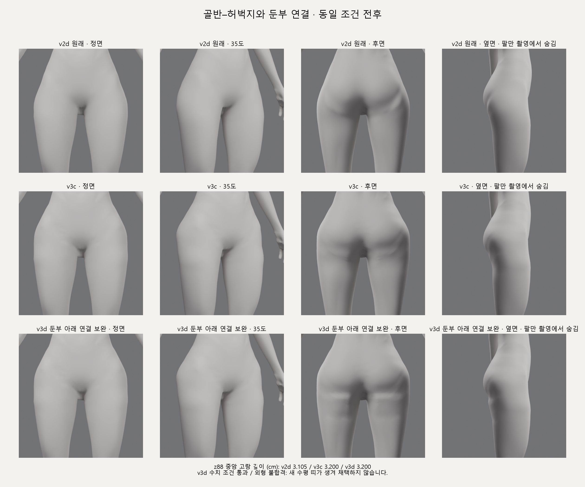
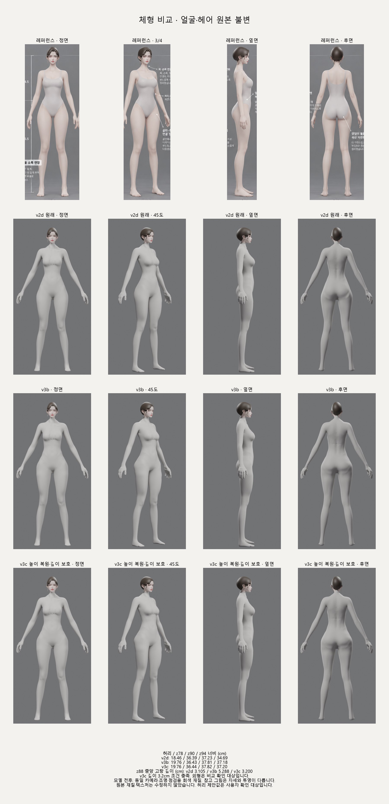
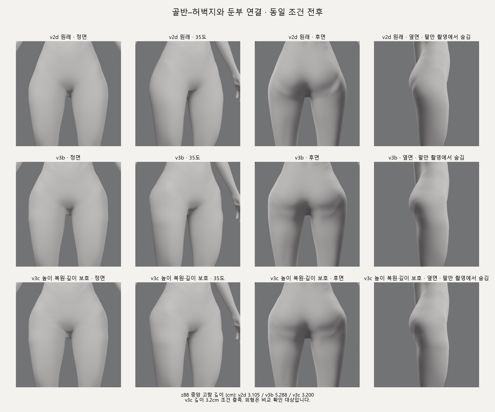
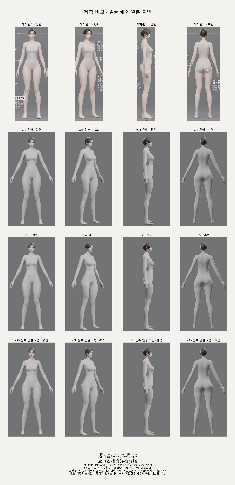
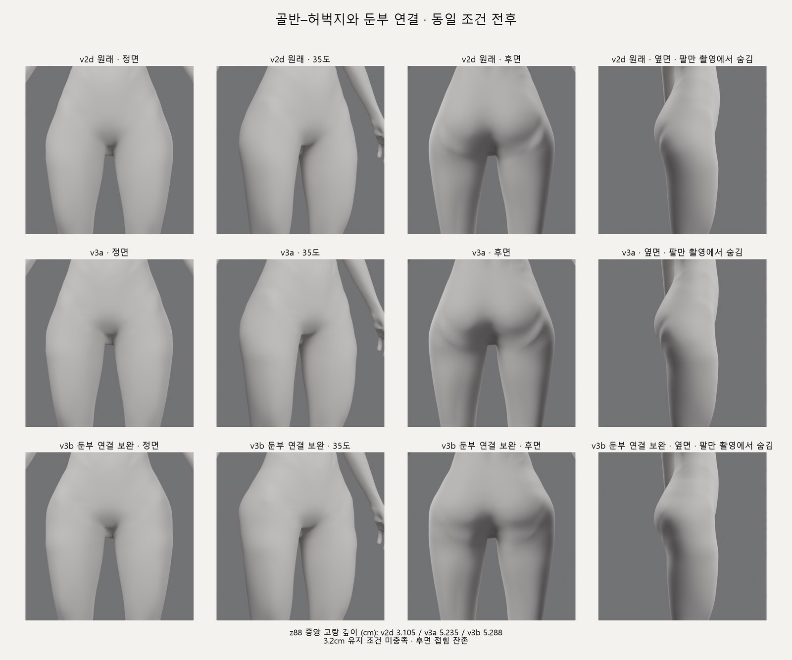
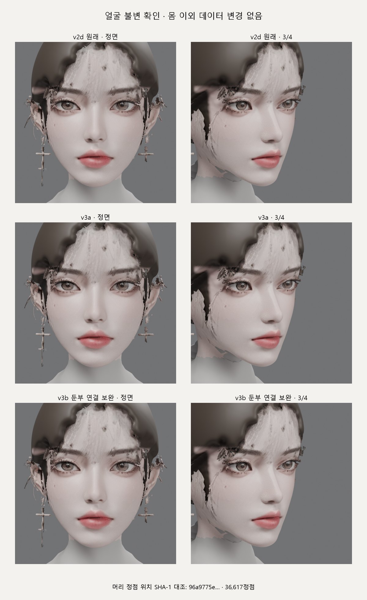
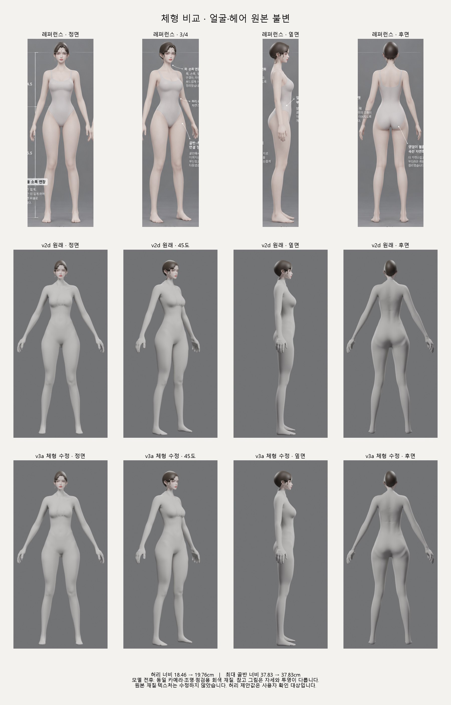
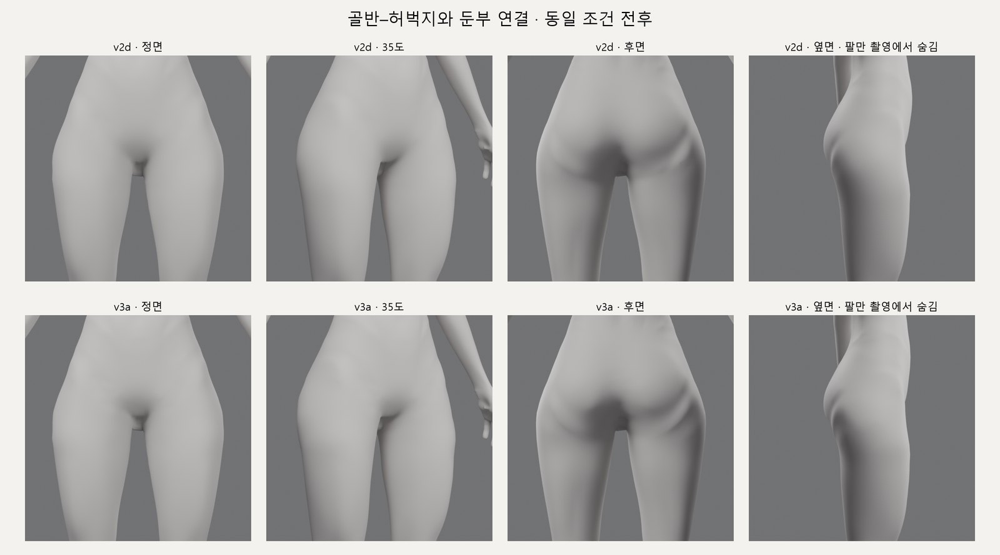
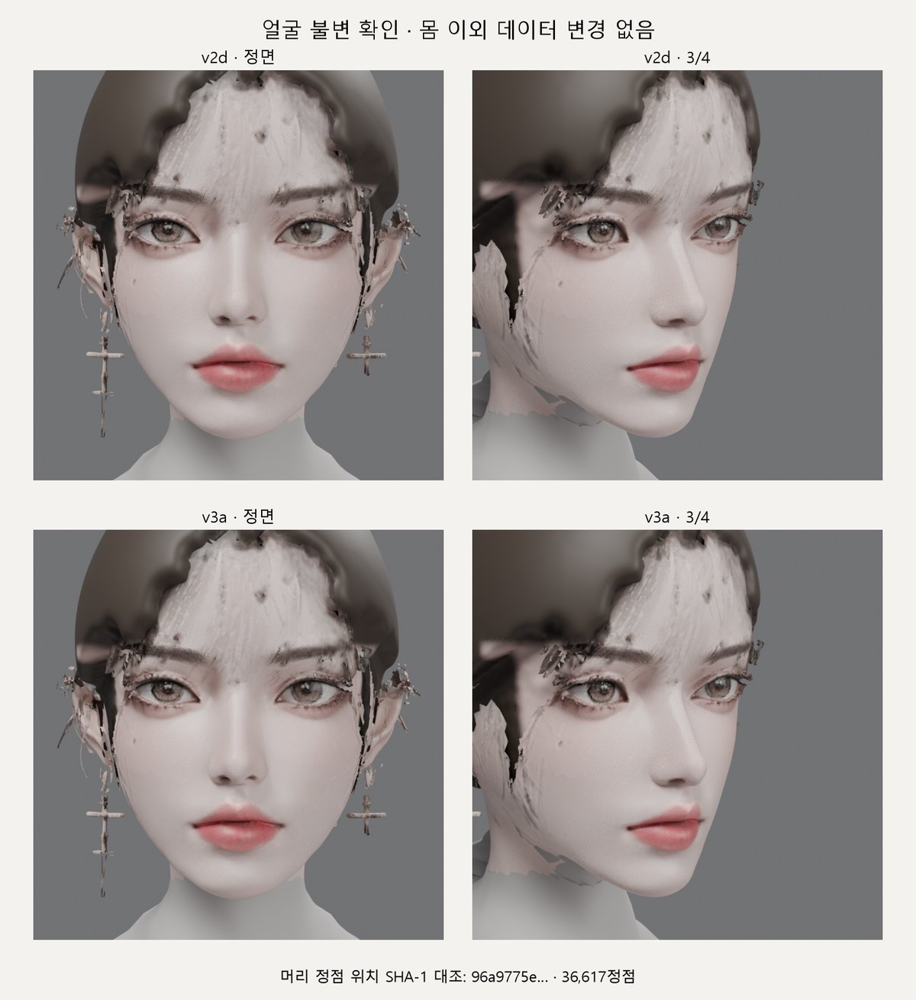